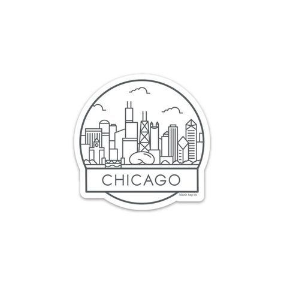

Viza B1/B2

Viza de turist pentru SUA este încadrată în categoria vizelor de tip B1/B2 și este destinată în principal persoanelor care călătoresc temporar în Statele Unite în scopuri de afaceri (B1) sau pentru motive personale (B2).
Vizele din categoria B1 sunt în general acordate persoanelor care călătoresc pentru întâlniri cu parteneri de afaceri, participarea la convenții, conferințe științifice sau evenimente de afaceri, rezolvarea problemelor legate de proprietăți sau pentru negocieri contractuale.
Vizele din categoria B2 sunt destinate călătoriilor cu caracter recreativ, inclusiv turism, vizite la prieteni sau rude, tratament medical sau activități sociale, culturale sau de servicii. În multe cazuri, vizele din categoriile B1 și B2 sunt combinate și eliberate sub forma unei singure vize, cunoscută sub denumirea de categoria B1/B2.

Pentru a aplica pentru viză, ai nevoie de un pașaport simplu sau electronic valabil pe o perioadă de 5 ani sau 10 ani, care să fie valid cel puțin până la data întoarcerii tale în țară.
Fotografia atașată cererii trebuie să aibă dimensiunea de 5 x 5 cm, iar dimensiunea feței tale trebuie să fie cuprinsă între 2,5 și 3,5 cm de la bărbie până la vârful capului. Această fotografie trebuie să fie făcută cu cel mult 6 luni înainte de aplicare.
În fotografia respectivă, trebuie să te uiți direct către cameră, iar fața ta trebuie să fie vizibilă în totalitate, fără a purta breton, ochelari, cercei sau alte accesorii.
În plus, este posibil să fie necesar să furnizezi dovezi ale proprietăților sau afacerilor deținute, în funcție de cerințele specifice ale consulatului sau ambasadei

Oferim suport integral pentru completarea formularului DS-160 pentru cererea de viză, disponibil prin videoconferințe sau telefoane în orice zi a săptămânii.
Asistență pas cu pas în procesul de plată a taxei de viză la centrele Banca Transilvania.
Programare rapidă și eficientă a interviului la ambasadă și suport pentru solicitările de urgență în cazul în care sunteți presat de timp.
De asemenea, vă oferim simulări ale întrebărilor care ar putea fi adresate la interviul de viză pentru a vă pregăti în mod corespunzător

Costul total pentru obținerea vizei de turist este de 299 de lei, care se plătește în două tranșe.
Prima tranșă este de 150 de lei și trebuie plătită în avans ,după obținerea vizei, este necesară plata celei de-a doua tranșe.
În cazul în care viza este refuzată, a doua tranșă nu mai trebuie achitată.
În plus față de costurile menționate mai sus, există și taxa de viza de 185 de dolari, care trebuie achitată la momentul solicitării vizei.
De asemenea, vă oferim opțiunea de a alege un pachet premium care include serviciul de transport al pașaportului la/dinspre partenerii noștri de la
Fan Curier, pentru un confort sporit în procesul de obținere a vizei